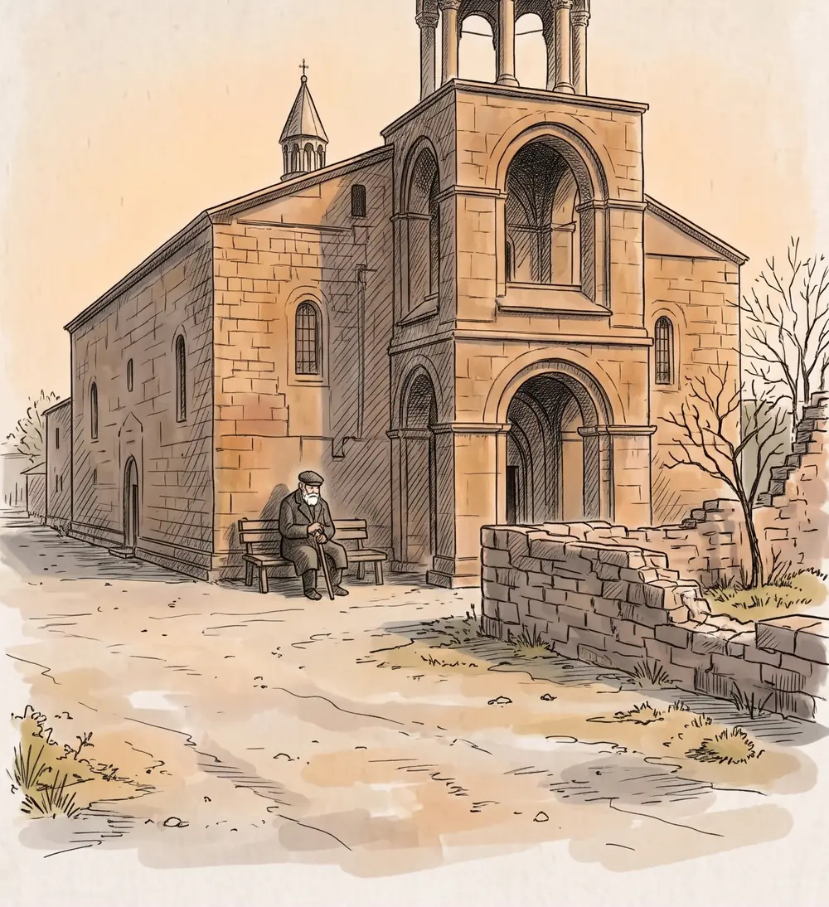
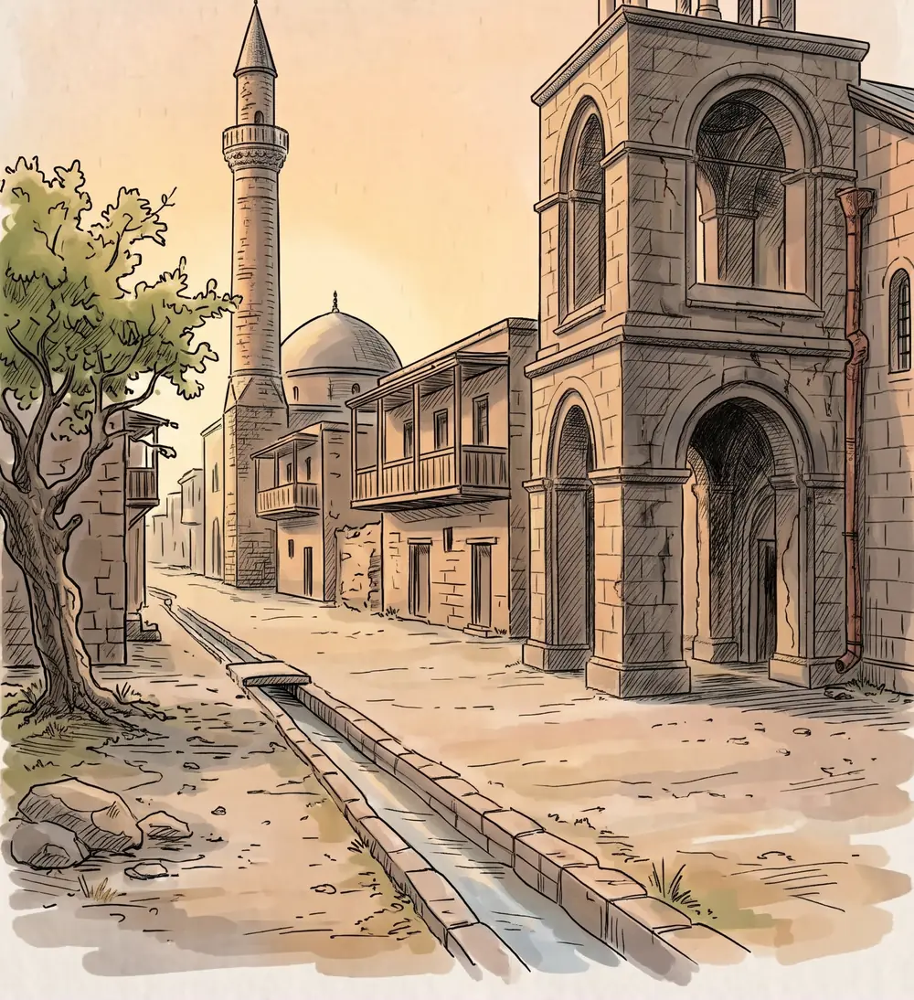
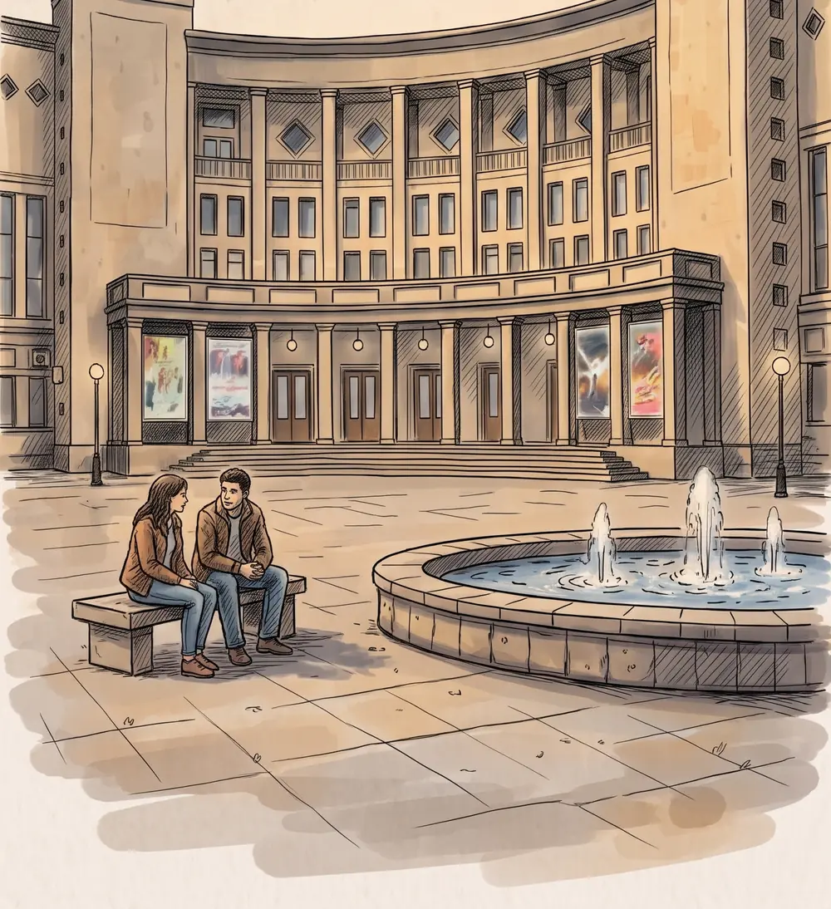

«Չկա» թանգարան · Պողոս-Պետրոս եկեղեցիМузей «Չկա» · церковь Погос-ПетросՉկա museum · Poghos-Petros church
ՔայլШагStep 1/4Ի՞նչ է սաЧто этоWhat it is
Քո անունը թանգարանում՝ ընդմիշտТвоё имя — в музее навсегдаYour name in the museum, forever
Նկարիչը քո անունը կփորագրի քանդված եկեղեցու կենդանի նկարում՝ քարի վրա։ Այն կերևա ցերեկը, մայրամուտին և գիշերը։Художник вырежет твоё имя на камне в живом рисунке снесённой церкви. Его будет видно днём, на закате и ночью.An artist carves your name into a stone in the living drawing of a demolished church. It shows by day, at sunset and at night.
- Նկարում ընտրում ես տեղըВыбираешь место на рисункеPick a spot in the drawing
- Գրում ես անունը կամ երկու տառПишешь имя или две буквыType a name or two letters
- Նկարիչը փորագրում է այն յոթ օրվա ընթացքումЗа 7 дней художник вырезает егоWithin 7 days the artist carves it




ՔայլШагStep 2/4ՏեղըМестоSpot
Ընտրիր տեղըВыбери местоChoose a spot
Ազատ տեղում սեղմիր «Ընտրել»։На свободном месте нажми «Выбрать».On a free spot, tap “Pick”.
Ազատ տեղեր՝ 8 / 8Свободно 8 из 88 of 8 spots free
Տեղը դեռ ընտրված չէМесто ещё не выбраноNo spot chosen yet
Ընտրված է՝Выбрано:Chosen:
Քո գրությունը՝Ваша надпись:Your text:—
ՔայլШагStep 3/4ԳրությունըНадписьText
Գրիր անունըНапиши имяWrite the nameԳրիր երկու տառНапиши две буквыWrite two letters
- ՏեղըМестоSpot
- —
- ԳրությունըНадписьText
- —
- ԺամկետըСрокReady
- մինչև 7 օրдо 7 днейwithin 7 days
ՔայլШагStep 4/4ՎճարումОплатаPayment
Ստուգիր և վճարիրПроверь и оплатиCheck and pay
- Եթե չհավանես՝ անվճար նորից կանենք։Если не понравится — переделаем бесплатно.If you don't like it — we'll redo it for free.
- Երբ պատրաստ լինի, հղումը կուղարկենք քո էլ. փոստին։Когда будет готово, ссылка придёт на почту.When it's ready, the link arrives by email.
Վճարում քարտով՝ Polar-ի միջոցովОплата картой через PolarCard payment via Polar